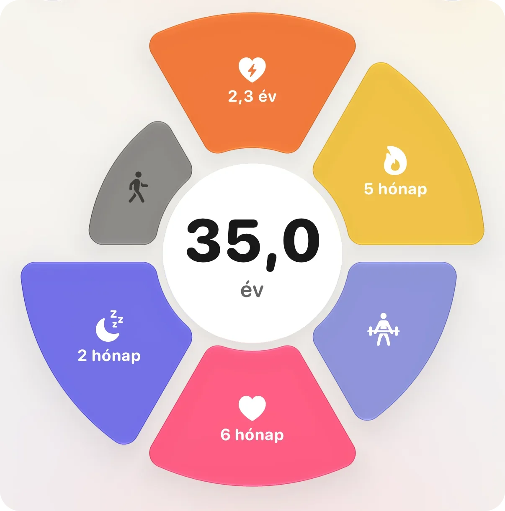
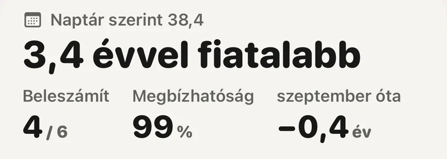

Alapok · Hosszú élet

Az órából számolt biológiai életkor becslés, nem mérés. Néhány jelet, amit az órád amúgy is rögzít (főleg a kardiofittséget, a napi mozgást, a nyugalmi pulzust és az alvást), a veled egykorú, azonos nemű emberekéhez hasonlít, és az eredményt években írja ki. Nincs mögötte vérvétel vagy génvizsgálat. Irányként olvasd, hetek távlatában, ne egyetlen nap ítéleteként.
Nem. A kutatásban a biológiai életkor többnyire két dolgot jelent: a DNS kémiai jelöléseiből épített órát (Horvath, 2013), vagy vérértékekből, például albuminból, vércukorból és gyulladásjelzőkből számolt mutatót (Levine és munkatársai, 2018). Mindkettőhöz vér- vagy szövetminta kell. Az órának egyik sincs.
Az órának olyan jelei vannak, amelyeket nagy vizsgálatok összekötöttek azzal, meddig és milyen egészségben élnek az emberek: mennyire edzett a szíved és a tüdőd, mennyit mozogsz, milyen gyorsan ver a szíved nyugalomban, hogyan alszol. Az órás életkor ezeket egyenként összeveti a veled egykorú, azonos nemű emberek közölt értékeivel, és a különbséget évekre váltja. Ha a jeleid olyanok, mint egy öt évvel fiatalabb átlagos emberé, öt évvel fiatalabbat ír.
Ez tehát években kifejezett összehasonlítás. Azért lehet hasznos, mert olyan dolgokból áll, amelyeken változtatni tudsz. Nem klinikai öregedési teszt, és soha ne olvasd annak. Az alapgondolatról külön jegyzet szól: mi a biológiai életkor? (angolul).
Minden gyártó maga választja ki. A legerősebb bizonyíték ezek mögött áll:
Mit olvas az Aera testkora, és melyik mennyit számít
Ezek csoportokban talált összefüggések. Azt mutatják, hogyan alakul sok ember sorsa, nem azt, hogy veled mi fog történni.
Mert minden gyártó a maga módján építi fel a számát. A saját leírásuk szerint a Garmin Fitness Age az újabb órákon a mozgás intenzitását, a nyugalmi pulzust és a BMI-t vagy a testzsírt olvassa. A WHOOP Age kilenc bemenetet ad össze, az alvás rendszerességétől és a lépésektől a VO2 maxig és a zsírmentes testtömegig. Az Oura Cardiovascular Age a pulzushullám alakjából következtet arra, mennyire merevek az ereid. Mások a bemenetek, más az összehasonlítási csoport, és mások a gyártók által szabott határok.
A közös bemenet sem ugyanaz a szám. Minden óra a maga módján becsüli a VO2 maxot. Egy 28 felnőttel végzett validációs vizsgálatban az Apple Watch átlagosan 6,1 ml/kg/perccel alacsonyabb értéket adott, mint a maszkos futópados teszt (Lambe és munkatársai, 2025). Ekkora eltérés bármelyik órás életkorban években mérhető.
Két, néhány évvel eltérő életkor tehát egyszerre is lehet korrekt. Válassz egyet, és azt figyeld, merre mozdul. A márkák összevetése a márkákról szól.
Az Apple 2026 szeptemberében jelentette be a saját változatát. A Health Age az átalakított Egészség alkalmazás új Longevity lapján jelenik meg, és azt mutatja, hogyan állnak az értékeid a naptári korodhoz képest. Az Apple bemenetként az Apple Watch VO2 max, nyugalmi pulzus, alvás és HRV adatait nevezi meg, és laborértékeket, például HbA1c-t és LDL-koleszterint is hozzáadhatsz.
Apple Watch kell hozzá, az átalakított Egészség alkalmazás pedig az Apple Intelligence-et támogató iPhone-okon fut. Az Apple szerint 2026 végén érkezik ingyenes frissítésként, először amerikai angol nyelven, és további nyelvek később követik. A magyar jelenleg nincs az Apple Intelligence nyelvei között, és magyar dátumot az Apple nem közölt. 2026 novemberében a funkció még bétában volt, a részletek változhatnak.
Minden, ami ezen az oldalon áll, arra is igaz. Években kifejezett összehasonlítás, az óra saját becsléseiből, és trendként érdemes olvasni.
Az a szám, amelyik egy futás után egy évet esne, csak hízelegne neked. Amit olvas, az hetek alatt változik. A fittség egy edzésidőszak alatt épül fel, a nyugalmi pulzus vele együtt csúszik lejjebb, egy alvási szokás pedig csak sok éjszaka után látszik.
Egy-egy nap többnyire zaj. 92 457 felnőtt adataiban egy ember nyugalmi pulzusa egyik napról a másikra kb. 3 ütéssel mozdult (Quer és munkatársai, 2020), olyan hétköznapi okokból, mint egy kései vacsora, egy meleg hálószoba vagy egy pohár bor. Egy őszinte életkornak ezen túl kell látnia.
A napi szám kevesebbet számít, mint az, hogy egy hónap alatt merre hajlik.
Erről külön jegyzet szól: miért mozdul lassan a biológiai életkor? (angolul).
A nyugalmi pulzus és a HRV a többit követi, közvetlenül nem edzed őket. Egyetlen kemény edzés, egy tökéletes éjszaka vagy egy étrend-kiegészítő nem mozdít el egy őszinte életkort.

Testkor a naptári korod mellettA lap megmutatja, mennyivel tér el a testkorod a naptári korodtól, hány összetevő számít bele, és mennyire biztos benne az Aera. A fittség, a szív, a mozgás és az alvás beleszámít. Az erőedzés és a járástempó látszik a virágon, de a korba nem számít bele.
Az Aera, iPhone-ra és Apple Watch-ra
Az Aera az iPhone-odon számol testkort abból, ami az Apple Health-ben már megvan: kardiofittség, aktív percek, lépések, nyugalmi pulzus, HRV, alvásidő és az alvás rendszeressége. Mindegyiket a korodra és a nemedre közölt értékekhez méri, és a képernyő megmutatja, melyik összetevő hány hónapot vagy évet tesz hozzá vagy vesz le, így látod, miből áll össze a szám.
Minden hétfőn újraolvassa az elmúlt heteidet. Ha már beállt, egy mozgalmas vagy csendes hét legfeljebb két-három hónappal mozdítja el. Soha nem tér el kilenc évnél többel a naptári korodtól, kevés adatnál pedig a naptári korod felé hajlik, és megmondja, mennyire biztos benne. Ha van Apple Health-be mentő vérnyomásmérőd, vagy megméred a derekadat, hozzáadhatod a vérnyomást és a derék–magasság arányt. Mindkettőt az ideálishoz méri, ezért gyakrabban adnak hozzá éveket, mint ahányat levesznek.
Az alkalmazás Field Guide része minden jelet elmagyaráz, és megnevezi a forrásait. Nincs fiók. A mai testkor és az elmúlt 30 nap ingyenes, a régebbi hónapok a Premium részei. Apple Watch-csal működik a legjobban, mert az rögzíti a VO2 maxot és a pulzust. Az egész alkalmazás magyarul van.
A testkor a mindennapi jóllétet szolgáló becslés, nem orvosi életkor. Az Aera nem orvostechnikai eszköz.
Nem. Az óra becsli: a kardiofittséget, a mozgást, a nyugalmi pulzust és az alvást a veled egykorú, azonos nemű emberekéhez hasonlítja. A biológiai életkor laboratóriumi mérései vérből vagy DNS-ből dolgoznak. Az órás életkor hetek távlatában, irányként hasznos, nem klinikai eredményként.
A Health Age az Apple saját becslése az átalakított Egészség alkalmazás Longevity lapján, amelyet 2026 szeptemberében jelentettek be. Az Apple szerint az Apple Watch adataiból, például a VO2 maxból, a nyugalmi pulzusból, az alvásból és a HRV-ből mutatja meg, hogyan állnak az értékeid a naptári korodhoz képest. Apple Watch kell hozzá, és először amerikai angol nyelven indul.
Minden gyártó más bemenetekkel, más összehasonlítási csoporttal és más határokkal dolgozik, és minden óra a maga módján becsüli a VO2 maxot. Két, néhány évvel eltérő életkor egyszerre is lehet korrekt. Egy számot kövess időben, és ne márkák között hasonlíts.
Építs állóképességet heteken át, mozogj minden nap, feküdj és kelj nagyjából ugyanakkor, és aludj eleget. A lépésekből a haszon nagy része napi kb. 7000-ig megvan. Egyetlen edzés vagy egy jó éjszaka nem mozdít el egy őszinte életkort.
Kapcsolódó jegyzetek (angolul): mi a biológiai életkor? · miért mozdul lassan a biológiai életkor? · mit nem tud mérni egy okosóra
Kapcsolódó útmutatók: VO2 max az Apple Watch-on: mennyire pontos? · Mennyi a normális nyugalmi pulzus? · Vérnyomásnapló, amit az orvosod is használni tud